Authentification
2 écransEspace utilisateur
2 écransFlux de signature
6 écrans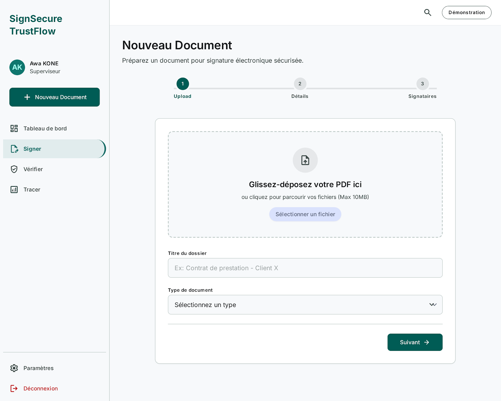
1. Nouveau dossier
Upload du document à signer.
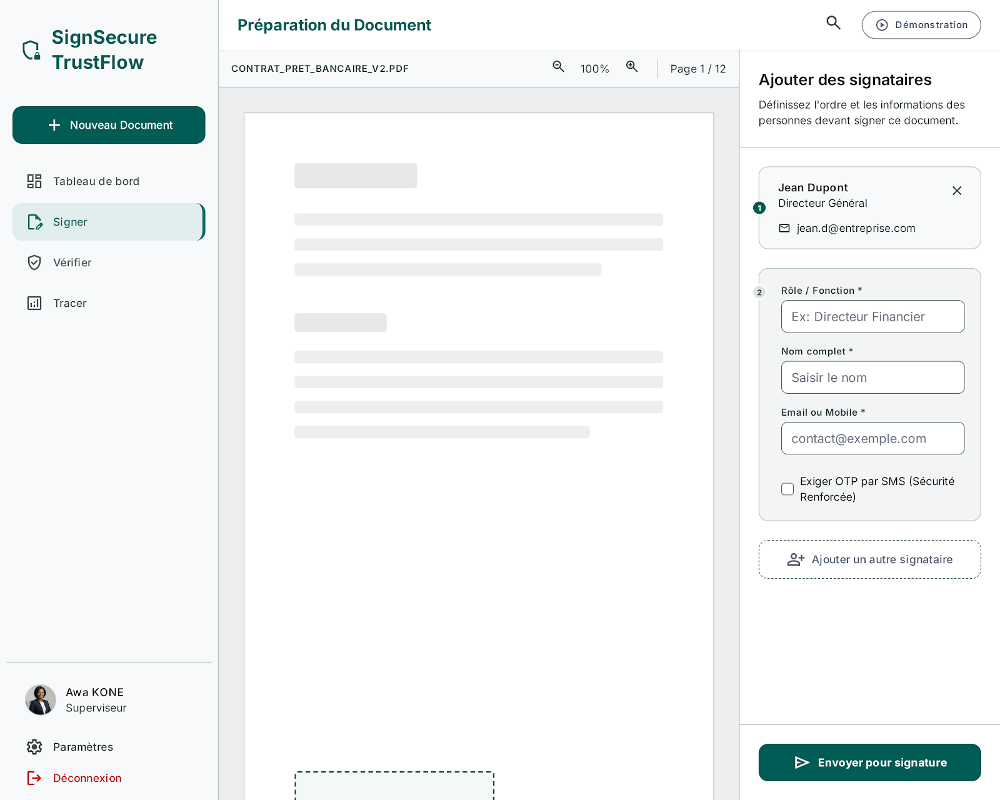
2. Signataires
Assignation des signataires et de l'ordre de signature.
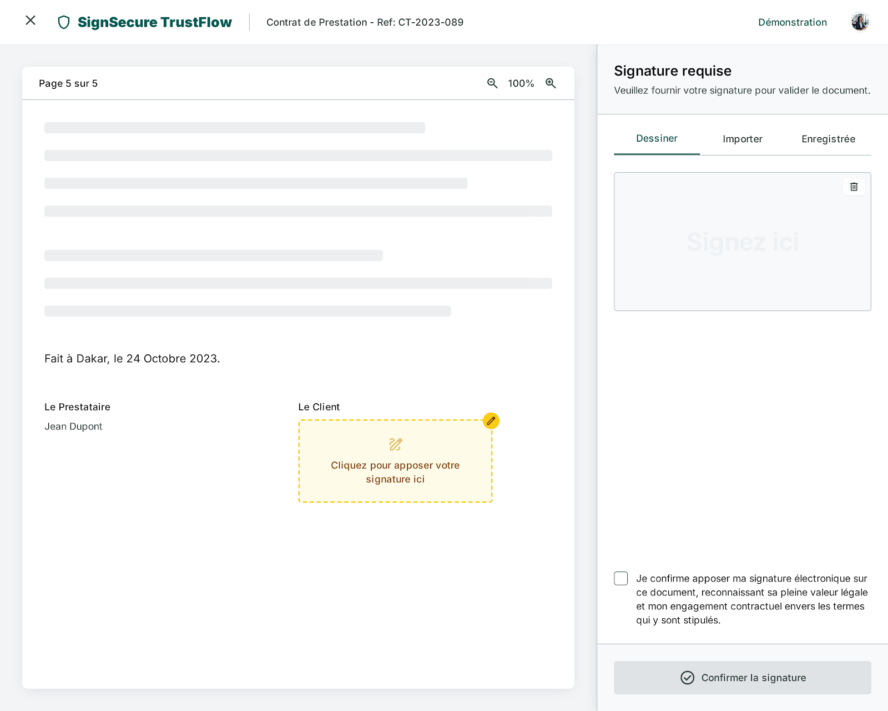
3. Apposer ma signature
Capture de la signature (dessin / import).
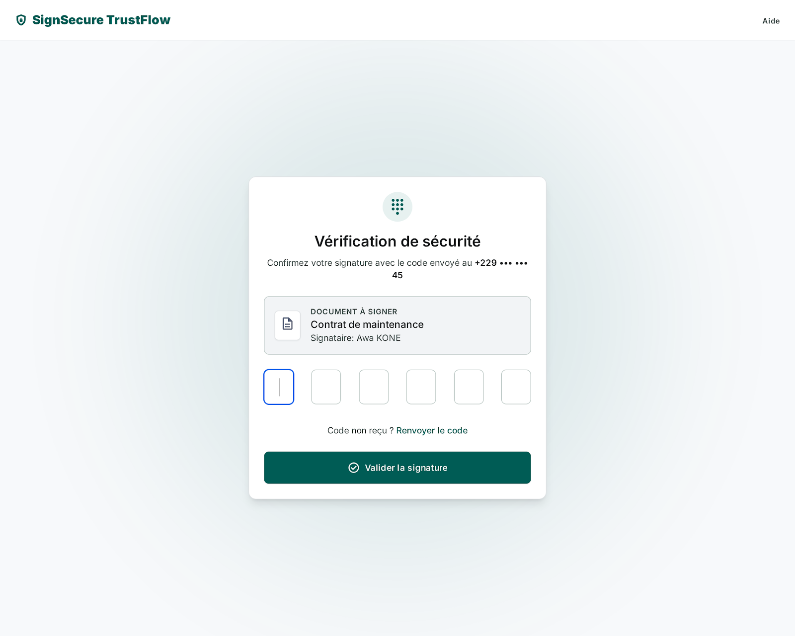
4. Code de sécurité
Confirmation OTP de la signature.
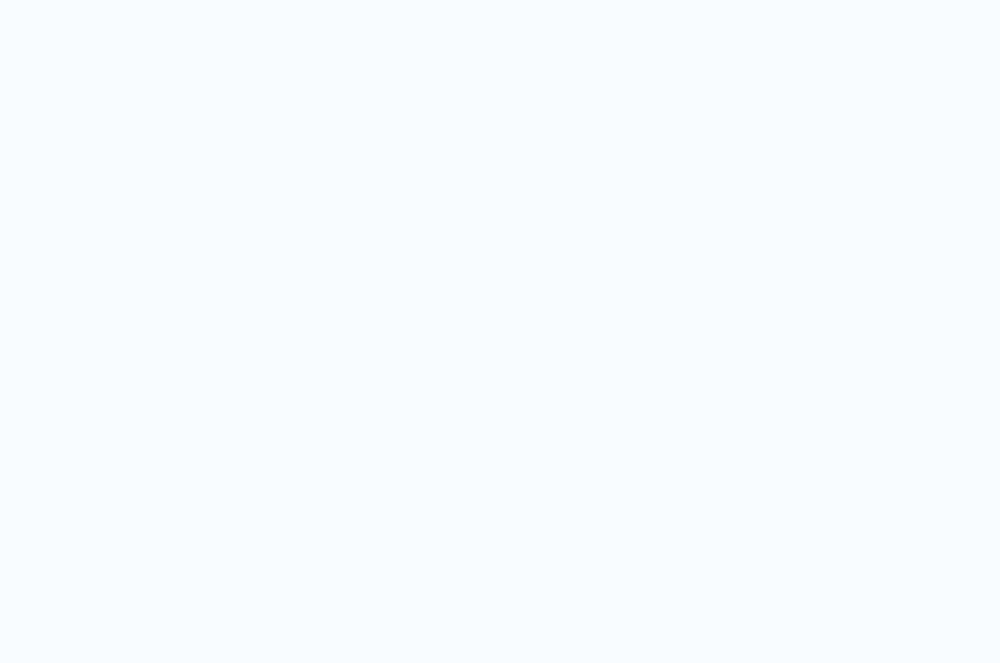
5. Signature réussie
Écran de succès transactionnel.
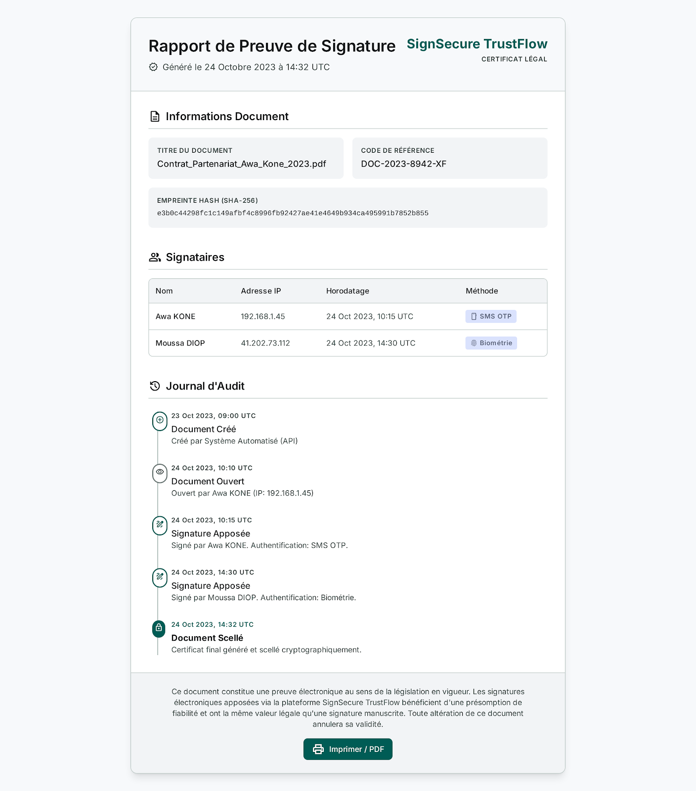
6. Rapport de preuve
Certificat légal imprimable / PDF.
Vérification publique
5 écrans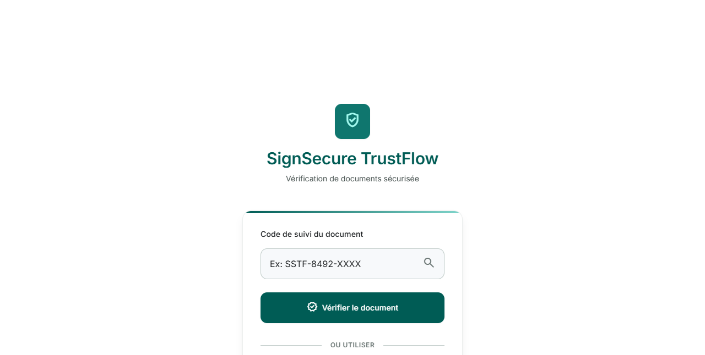
Vérification (accueil)
Saisie du code de suivi, sans compte requis.
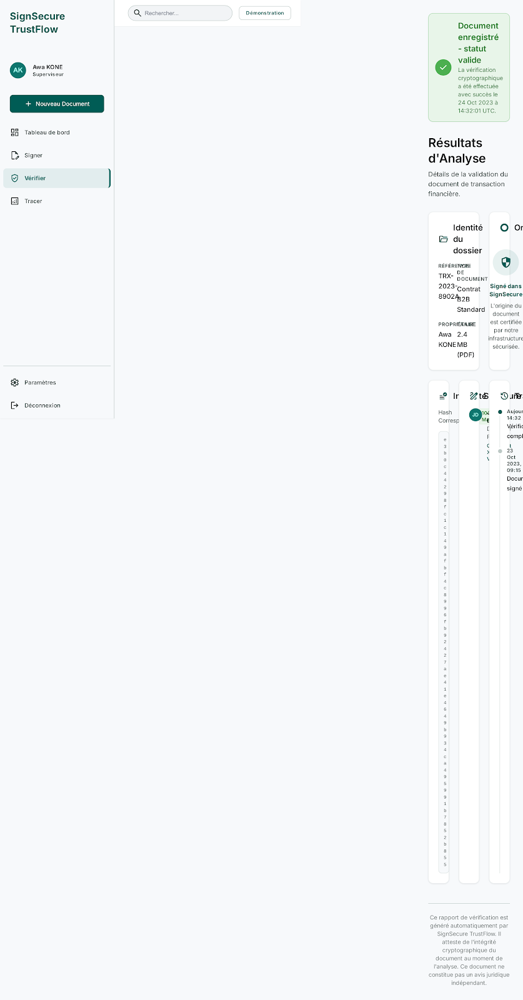
Résultat — Validé
Rapport d'analyse pour un document valide.
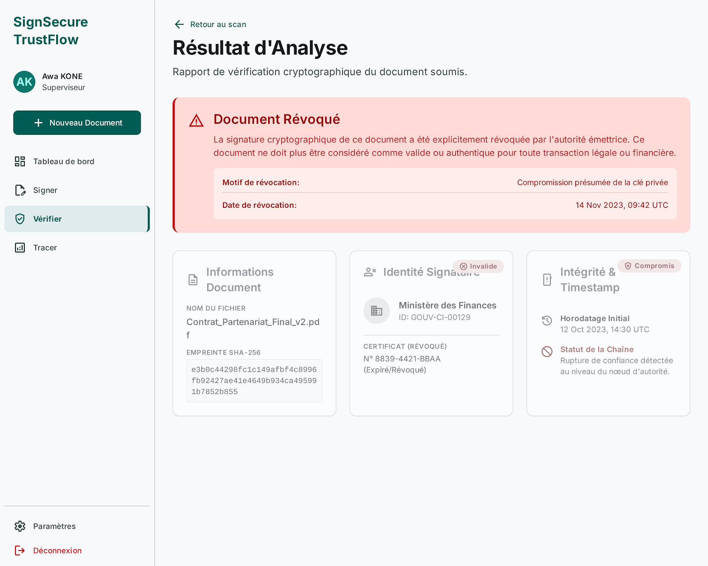
Résultat — Révoqué
Rapport d'analyse pour un document révoqué.
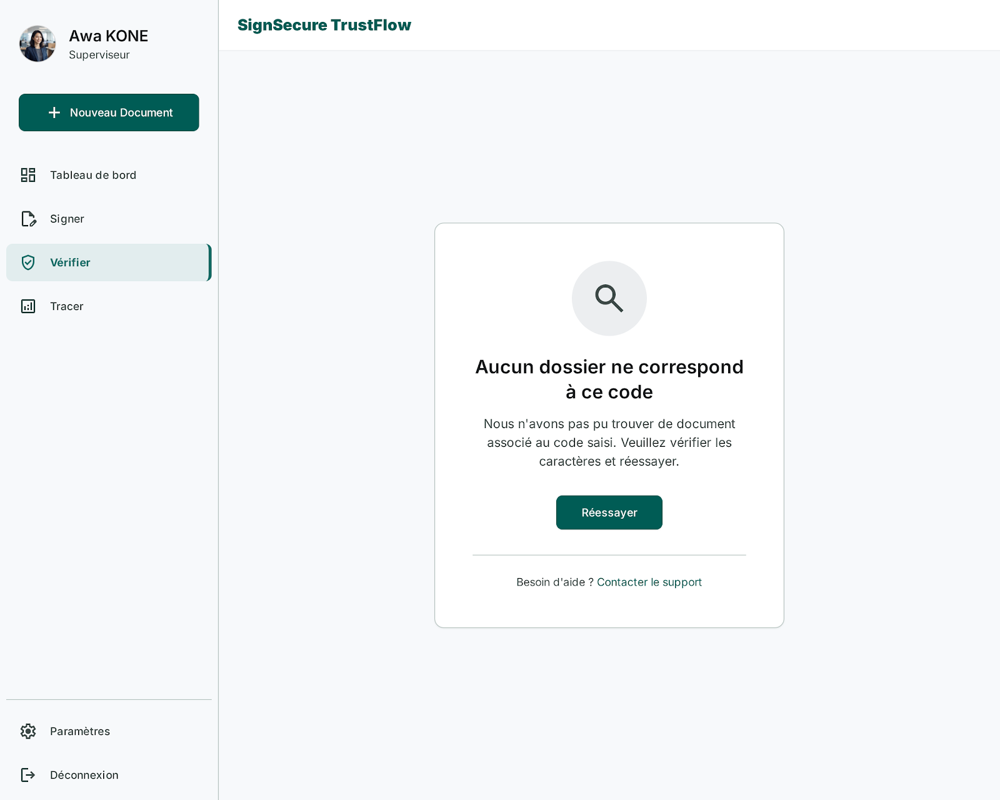
Code inconnu
État d'erreur — code introuvable.
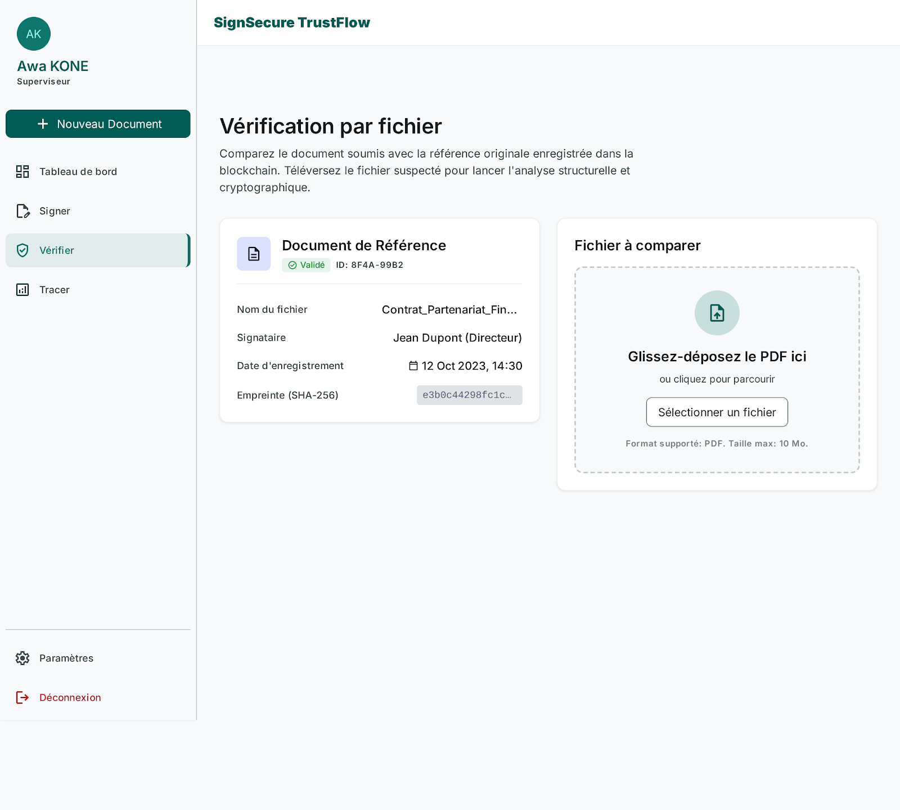
Comparaison de fichiers
Vérification par comparaison de deux fichiers.
Traçabilité
2 écransMobile — Enregistrement physique
6 écrans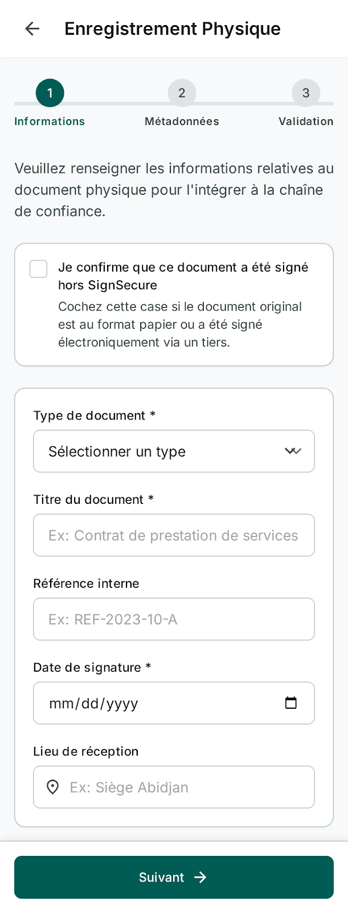
1. Étape 1
Démarrage de l'enregistrement physique.
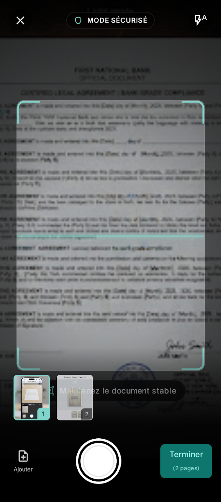
2. Capture caméra
Scan du document en mode sécurisé.
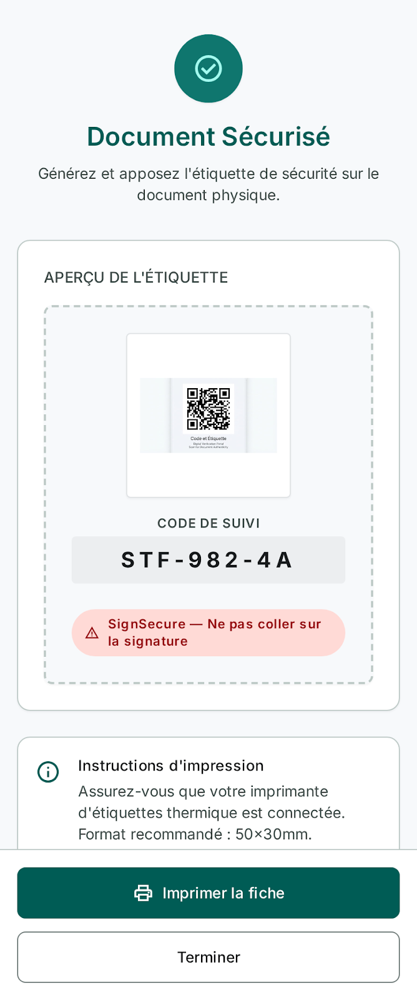
3. Code & étiquette
Association d'un code de suivi physique.
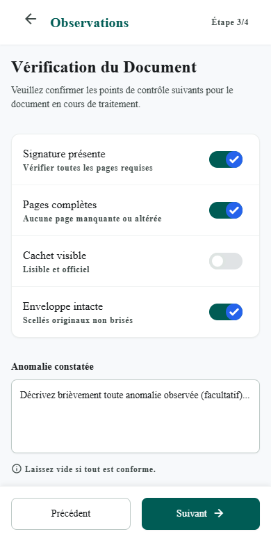
4. Observations
Points de contrôle du document.
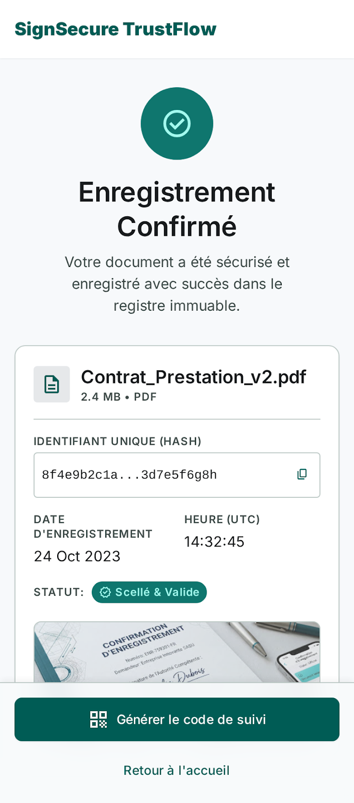
5. Confirmation
Écran de succès de l'enregistrement.
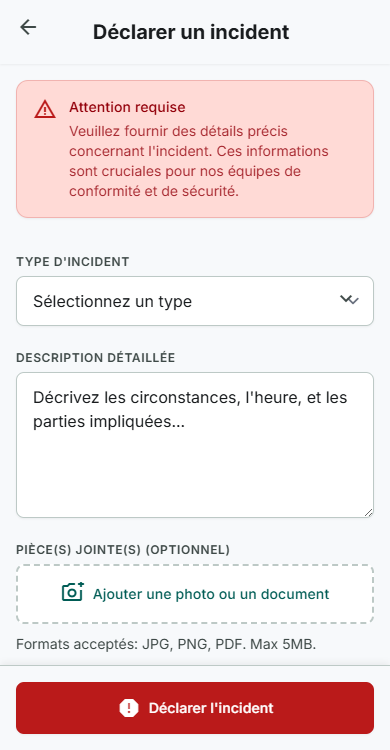
Déclarer un incident
Branche alternative en cas d'anomalie.